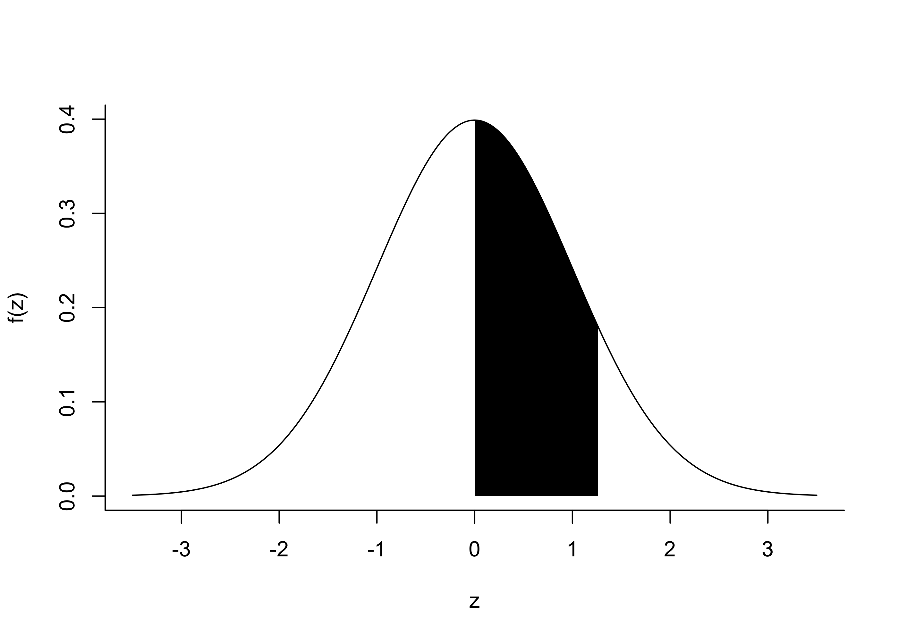

In the table below, add the row and column label together to obtain \(z\). Then the table gives \(P(0 \leq Z \leq z)\) where \(Z \sim \mathcal{N}(0,1)\). For example, we obtain \(P(0 \leq Z \leq 1.26) = 0.3962\) from the table, which is depicted in Figure 23.1.
Code
z <-seq(-3.5,3.5,length=501)fz <-dnorm(z)plot(z,fz,type="l",xlab="z",ylab="f(z)",bty="l")a <-1.26xpoly0 <-seq(0,a,length=201)xpoly <-c(0,xpoly0,xpoly0[201])ypoly <-c(0,dnorm(xpoly0),0)polygon(xpoly,ypoly,col="black",border=NA)

Figure 23.1: Illustration of the probabilities given in the \(Z\) table.
Code
z <-seq(0,3.09,by = .01)val <-pnorm(z) -1/2table <-matrix(round(val,4),31,10,byrow=TRUE)rownames(table) <-sprintf(seq(0,3,by=.1),fmt="%.1f")colnames(table) <-sprintf(seq(0,.09,by=.01),fmt="%.2f")table